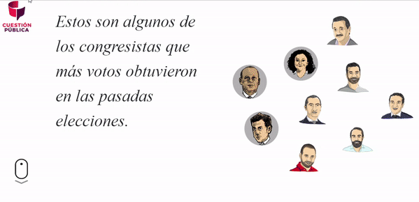
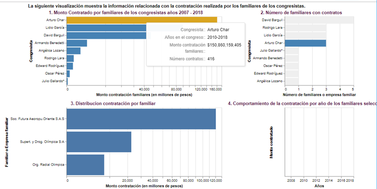
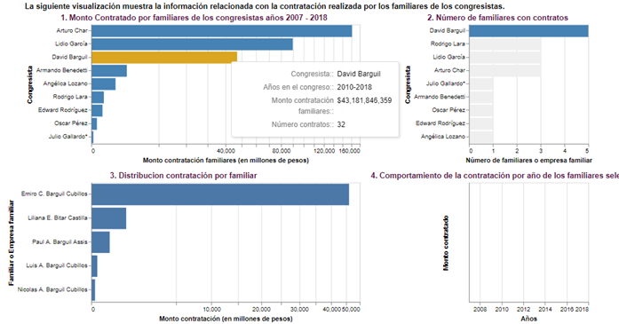
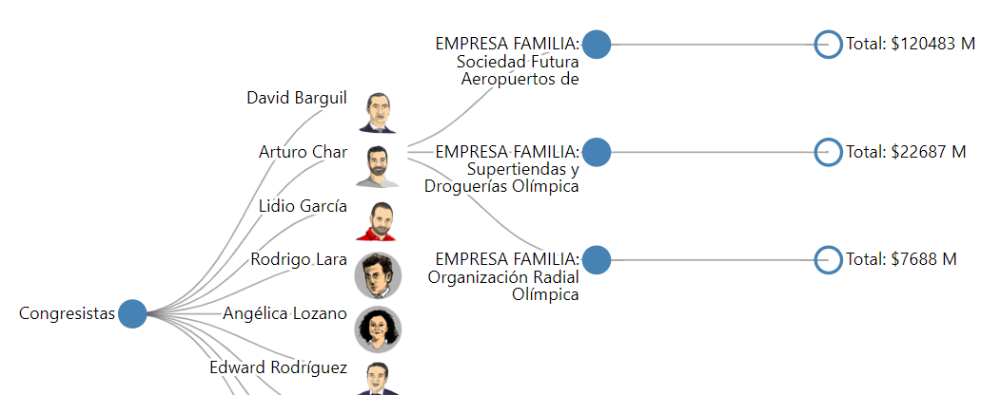
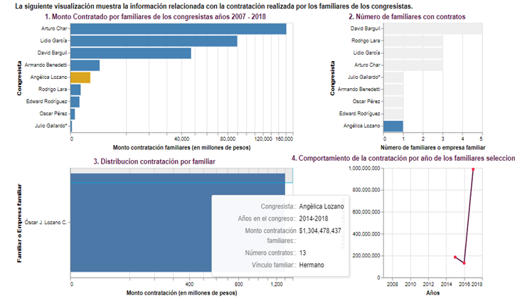
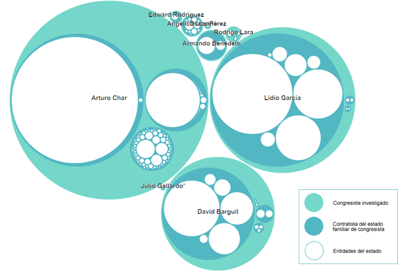
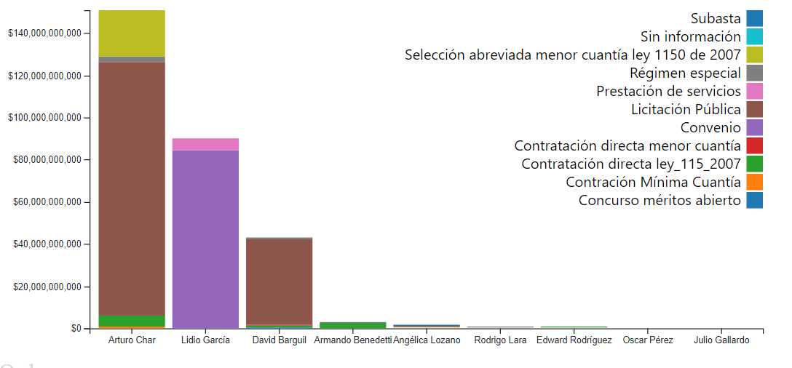

## **sabemos lo que hiciste** **(*Familiares de congresistas contratistas del estado*)** <img src="lib/CP Libs/CP Identidad/CUESTION PUBLICA/PNG/CP_B3.png" width="20%"> <!--  --> *Santiago Suárez Conde* <br> *Martha Cardenas*
<img src="lib/CP Libs/CP Identidad/CUESTION PUBLICA/PNG/CP_B3.png" width="30%"> - <p class="fragment"> Es un medio digital dedicado a la investigación y el periodismo de datos de interés público. </p>
<h2> Sabemos lo que hiciste </h2> - <p class="fragment"> Serie que investiga a congresistas colombianos, revelando su patrimonio y sus posibles conflictos de intereses.</p> - <p class="fragment"> Actualmente, Cuestión Pública está llevando a cabo una investigación que quiere mostrar a los colombianos que 1 de cada 2 congresistas en el país tiene contratistas familiares con el estado</p>
<h1>Data</h1> - <p class="fragment"> Lista 10 congresistas más votados. </p> - <p class="fragment"> Lista de familiares, financiadores, laborales, equipo UTL, político, familiar y político, amistades, cercanías y empresas relacionadas.</p> - <p class="fragment"> Cruce de datos en el portal de Servicio de Contratación Pública (SECOP - www.contratos.gov.co/) con un Scraping que creo <b>Datasketch</b>.</p>
<h1>Usuarios</h1> - <p class="fragment"> El Usuario objetivo es cualquier ciudadano que ingresa al sitio Web de Cuestión Pública con el fin de encontrar información relacionada con política y el interés público.</p>
<h1>Solución</h1> - <p class="fragment"><b>Demo: </b> https://santiagoconde0.github.io/sabemosLoQueHiciste/</p>

<h2>Tecnologías usadas</h2> - HTML 5 - CSS - Javascript - D3 v5 - Vegalite - jQuery - Bootstrap - RevealJS - RevealVizScroll
<h2>Tareas</h2> - <p class="fragment" style="font-size: 40px"> Usuarios interactúen con la visualización y puedan hacer veeduría de algunas figuras políticas del país. </p> - <p class="fragment" style="font-size: 40px"> Mostrar monto de las contrataciones realizada por los familiares de los congresistas desde el año 2007 al 2018.</p> - <p class="fragment" style="font-size: 40px">Explorar y detallar a los congresistas que tienen familiares contratando con el estado, mostrando los montos de contratos, familiares, nombre de empresa, cantidad de contratos, tipos de contratos, etc.</p>
Insights
- <p style="font-size: 30px"> El Congresista que presenta mayor monto contratado por sus familiares o empresa familiar es Arturo Char. Contratación por más de $150.000 millones de pesos en 416 contratos. </p> 
- <p style="font-size: 30px"> El congresista que tiene mayor número de familiares contratistas del estado es David Barguil, con 5 familiares cuya contratación suma más de $43.000 millones de pesos en 32 contratos.</p> 
- <p style="font-size: 30px" > La Sociedad Futura Aeropuertos de Oriente S.A.S que tiene vínculos familiares con el Congresista Arturo Char, elegido entre 2010 y 2018, presenta el mayor monto contratado por más de $120.000 millones de pesos en tres contratos adjudicados entre los años 2010 al 2015. <img src="img/IA3.png"/>
- <p style="font-size: 30px" > La Sociedad Futura Aeropuertos, Supertiendas y Droguerias Olimpica y Organización Radial Olimpica son las tres empresas contratistas del estado que tienen vínculos con el congresista Arturo Char.</p> 
- <p style="font-size: 30px" > El hermano de la congresista Angelica Lozano (periodos congreso 2014 – 2018) presenta una contratación que inicio en el año 2015 por 185 millones de pesos y asciende a 987 millones de pesos al año 2017 para un total de 1.304 millones de pesos en 13 contratos.</p> 
- <p style="font-size: 30px" > El Congresista Arturo Char presenta la mayor concentración de entidades con las cuales la empresa familiar celebró contratos. Seguido por el Congresista Lido García y David Barguil..</p> 
- <p style="font-size: 30px"> El tipo de contrato donde se concentra el mayor monto del total contratado por los familiares de los congresistas es la Licitación Pública y el Convenio.</p> 
Gracias!